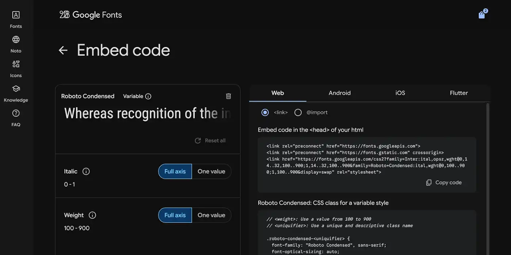

When you work with Rive, one of the biggest advantages is how lightweight the files are. A full animation with vectors, interpolation, states, and interactions can easily stay under 5 KB. That is one of the reasons Rive feels perfect for web-based motion systems.
But the moment you embed a font, everything changes. A single embedded font can take a Rive file from 3 KB to 800 KB or more.
That’s not a typo.
In this article, I’ll show you a better approach: using referenced fonts instead of embedded ones. This lets you share the same font across multiple Rive animations without increasing file sizes.
Why Embedded Fonts Become a Problem
When you embed a font inside a Rive file, you are literally packing the entire .ttf file inside the .riv file. Even a very optimized variable font can easily be hundreds of kilobytes.
If your project uses:
- One animation file, that might be acceptable.
- Ten animation files, and suddenly you are loading 8 to 10 MB of extra weight.
Design systems with motion quickly feel heavy, and this goes against what Rive is designed for.
The Referenced Font Approach
A referenced font means the font is not included inside the .riv file. Instead, Rive stores a reference to it.
This keeps the .riv file tiny, usually around 3 KB, even when text nodes are used.
But there’s a catch:The web version of Rive needs to know where the font file is located so it can load it.
The good news is that Rive provides a simple hook for that using WebGL2. Developers can load the font file once, and every .riv file that references that font can use it.
You do not need to write the code.
This article is about understanding the workflow as a designer so you can prepare your Rive files correctly.
How the Font Loading Works (Designer-Friendly Explanation)
When a Rive animation loads on a webpage, it checks whether any external assets are required.
If there is a referenced font:
- Rive detects that the font is missing.
- It asks the webpage if the font is available.
- The webpage loads the .ttf or .otf file.
- Rive injects the font into the animation at runtime.
It works like this:
“I know which font I need. I just do not have it with me.Can someone provide it?”
Because the font is not inside each animation, your .riv files remain extremely small.
What Designers Need To Do in Rive
Here is everything you need to prepare on the design side:
1. Add your font to Rive as usual
Import it into the Fonts panel.2. Use the font in your text nodes
Style your typography normally.3. Do not embed the font
This is the most important step.When exporting:
- Make sure the font is shown as “Referenced” instead of “Embedded”.
- Rive will warn you that your file depends on an external font.
- This is the correct behavior for this workflow.
4. Use the same font across all your Rive animations
This allows developers to load one shared font file for the entire site or app.
How Developers Load the Referenced Font
You do not need to write this, but it helps to understand how simple it is.
This is the essential part of the code:
assetLoader: async (asset) => {
if (asset.isFont) {
const response = await fetch("RobotoCondensed-Italic.ttf");
const data = await response.arrayBuffer();
const font = await rive.decodeFont(new Uint8Array(data));
asset.setFont(font);
return true;
}
return false;
}
This tells Rive to load the font file and attach it to the animation whenever a referenced font is detected.
Once this is in place, all your Rive files that use the same font will work automatically.
Why This Workflow Is Better
1. Huge file size reduction
Here is a real comparison:| Rive File | With Embedded Font | With Referenced Font |
|---|---|---|
| Single animation | Around 800 KB | 3 KB |
| Ten animations | Around 8 MB | 30 KB |
| Fifty animations | Around 40 MB | 150 KB |
This matters when:
- Your site needs to load instantly.
- Animations appear frequently in user interfaces.
- You are building a complete motion system.
2. Fonts stay consistent across all animations
If the font is updated, you only replace one .ttf file instead of updating every .riv file.3. Faster design workflow
Your Rive files stay extremely small, which makes previewing and exporting almost instant.4. Better developer handoff
Developers load the font once, and it works everywhere.When You Should Still Embed a Font
Using referenced fonts is usually the smartest option, but there are a few cases where embedding a font is still the right call. These situations depend on how your animation is delivered and how the text inside your Rive file is handled.
Offline apps
If your animation must run without any internet connection, embedding the font ensures that the text will always render correctly. This is important for offline apps, airline IFE systems, museums, or scenarios where you cannot guarantee access to a remote or bundled font.
Kiosk or installation setups
Installations usually run on locked-down hardware. If you cannot bundle additional files or control how assets are loaded, embedding the font inside the .riv file is the safest way to keep everything self-contained.
Native mobile apps with packaged assets
iOS and Android apps can ship their own fonts inside the app bundle. Most of the time, you will reference these fonts inside your Rive file rather than embed them. This keeps the .riv small and lets your app use its own localization workflow. However, if your app has no bundled fonts at all or if the animation must include a very specific font that only exists inside the .riv, embedding can still make sense.
Localization inside the Rive animation
If you plan to handle translations inside your native app (which is the recommended approach), you should not embed fonts for each language. The app can provide its own fonts and pass text into the Rive file at runtime. But if you decide to put all text directly inside the Rive file and keep multiple languages inside the animation timeline, embedding a font might be required to guarantee consistent rendering across all devices. Note that this will increase the .riv size a lot, so use this only when there is no better workflow.
Projects where no shared font usage exists
If your animations are completely independent from one another and each one uses a unique font only used once, embedding might be acceptable. This avoids setting up a shared referenced font and keeps each animation completely portable, at the cost of file size.For anything web-based, referenced fonts are almost always the best choice.
A Simple Way To Understand It
Think of embedded fonts as placing a full copy of the font inside each animation.
Think of referenced fonts as pointing all animations to a single shared font file.
One approach is heavy and repetitive. The other is lightweight and scalable.
Final Thoughts
Rive gives you very powerful motion tools, but many of the improvements in performance come from workflow decisions rather than animation techniques.
Using referenced fonts keeps your files small, your typography consistent, and your animations fast to load. It is a small technical choice that makes a meaningful difference across an entire product.